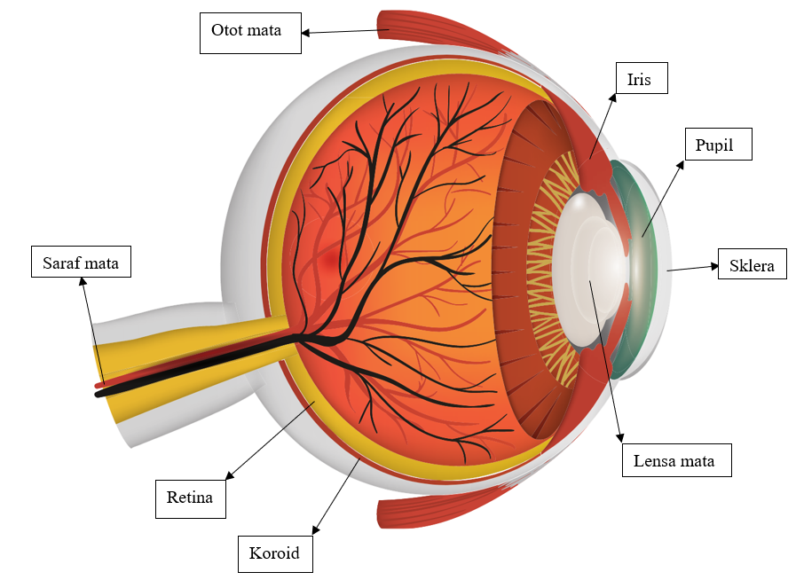

Perhatikan gambar dan tabel dibawah ini sebelum menjawab kuis!

No
Nama
Fungsi
1
Otot mata
Menambatkan bola mata pada dinding dalam rongga mata dan menggerakkan bola mata.
2
Iris
Mengatur besar kecilnya pupil serta memberi warna mata.
3
Pupil
Mengatur banyaknya cahaya yang masuk ke mata.
4
Sklera
Menerima dan meneruskan cahaya yang masuk ke mata.
5
Lensa Mata
Meneruskan dan memfokuskan cahaya agar jatuh tepat di retina.
6
Koroid
Merupakan lapisan tengah yang banyak mengandung pembuluh darah.
7
Retina
Merupakan lapisan terdalam bola mata yang mengandung sel-sel penglihatan. Bagian retina sangat peka terhadap cahaya disebut bintik kuning, sedangkan bagian yang tidak peka terhadap cahaya disebut bintik buta.
8
Saraf Mata
Meneruskan rangsang cahaya yang diterima sel-sel reseptor ke susunan saraf pusat otak.
Video Pembelajaran
Perhatikan video pembelajaran materi sifat cahaya dapat merambat lurus berikut ini hingga selesai! Kemudian jawablah latihan dibawah ini yang akan muncul setelah video berakhir!
Video Bagian-Bagian Mata
Mari Berlatih
Lengkapilah pertanyaan berikut sesuai nama dan fungsi terkait dengan materi yang telah dibaca sebelumnya!
Jika kotak berwarna "hijau" maka jawaban benar.
Jika kotak berwarna "merah" maka jawaban salah.
1. Menambatkan bola mata pada dinding dalam rongga mata dan menggerakkan bola mata adalah
2. Mengatur besar kecilnya pupil serta memberi warna mata adalah
3. Mengatur banyaknya cahaya yang masuk ke mata adalah
4. Menerima dan meneruskan cahaya yang masuk ke mata adalah
5. Meneruskan dan memfokuskan cahaya agar jatuh tepat di retina adlah
6. Merupakan lapisan tengah yang banyak mengandung pembuluh darah adalah
7. Merupakan lapisan terdalam bola mata yang mengandung sel-sel penglihatan. Bagian retina sangat peka terhadap cahaya disebut bintik kuning, sedangkan bagian yang tidak peka terhadap cahaya disebut bintik buta adalah
8. Meneruskan rangsang cahaya yang diterima sel-sel reseptor ke susunan saraf pusat otak adalah
 Video Pembelajaran
Video Pembelajaran
 Mari Berlatih
Mari Berlatih